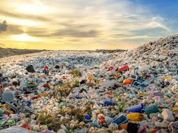

Plastik chiqindilar va ekologik muammolar
Plastik chiqindilar global ekologik muammo bo'lib, ularning ko'pligi va to'liq parchalanmasligi tabiiy resurslarga jiddiy ta'sir ko'rsatadi. Plastika chiqindilarining asosiy muammolari quyidagilar:
- Tabiatda uzoq vaqt saqlanib qolishi
- Oqibatda suv havzalarini ifloslantirishi
- Hayvonlarning plastikni yutib olishlari

Plastik chiqindilarni kamaytirish uchun chora-tadbirlar
Plastik chiqindilarni kamaytirish uchun quyidagi choralar ko'rilishi kerak:
- Plastik mahsulotlarni qayta ishlashni ko'paytirish
- Plastikdan foydalanuvchilarni oshirish va ekologik toza mahsulotlarni ishlab chiqarishni rag'batlantirish
- Plastikni ekologik zararsiz materiallarga almashtirish
- Plastikni yig'ish va qayta ishlash tizimlarini joriy qilish
Bosh sahifaga qaytish